Building fMRI Regressors
Bradley R. Buchsbaum
2026-10-02
Source:vignettes/a_02_regressor.Rmd
a_02_regressor.RmdIntroduction: What is a Regressor?
In fMRI analysis, a regressor (or predictor) represents the expected BOLD signal timecourse associated with a specific experimental condition or event type. It’s typically created by convolving a series of event onsets (often represented as delta functions or “sticks”) with a hemodynamic response function (HRF).
fmrihrf provides the regressor() function
to easily create these objects from event timings and an HRF. While
these regressor objects are often constructed automatically by modeling
functions in other packages, this vignette explores how to create and
manipulate them directly, offering finer control over the model
components.
Basic Regressor from Event Onsets
Suppose we have a simple event-related fMRI design with stimuli
presented every 12 seconds. We want to model these events using the SPM
canonical HRF (HRF_SPMG1). The events are brief, so we
model them with a duration of 0 seconds (instantaneous).
# Define event onsets
onsets <- seq(0, 10 * 12, by = 12)
# Create the regressor object
# Uses HRF_SPMG1 by default if no hrf is specified
# Duration is 0 by default
reg1 <- regressor(onsets = onsets, hrf = HRF_SPMG1)
# Access components using helper functions
head(onsets(reg1))
#> [1] 0 12 24 36 48 60
nbasis(reg1)
#> [1] 1The regressor is the convolution of the event train with the HRF.
Each event contributes one copy of the HRF, starting at its onset, and
overlapping copies add up. Here the next event arrives while the
previous response is still in its undershoot, so every peak after the
first is slightly lower. Each copy is added only over the HRF’s
span (24 s for HRF_SPMG1), so where the
undershoot is cut off there is a tiny step, about 1.5% of the peak,
visible on fine grids.
Throughout these vignettes, grey marks inputs, events and reference curves, and coloured lines are HRFs or regressors. The one exception: when regressors with different events share a panel (as in the shifted regressor below), each regressor’s events are marked in its own colour.
The HRF above is scaled to a peak of 1 to show its shape. Unscaled,
HRF_SPMG1 peaks at about 0.175, the height of the first
regressor peak in the next figure (later peaks are about 0.16, lowered
by the previous undershoot).
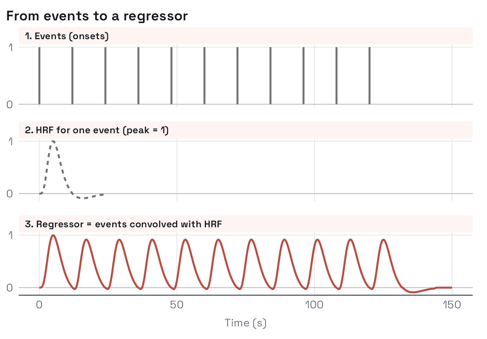
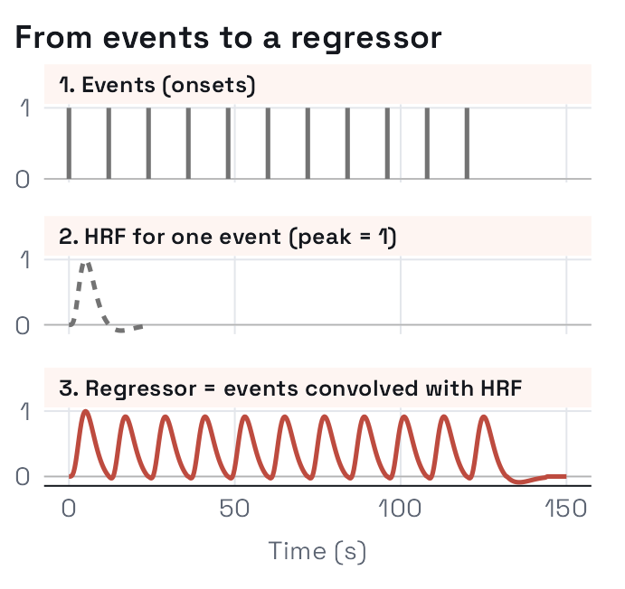
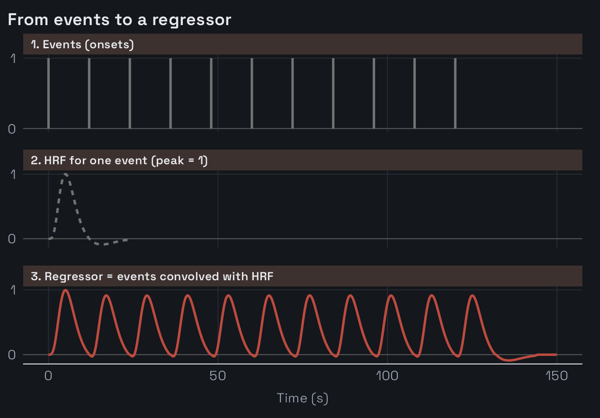
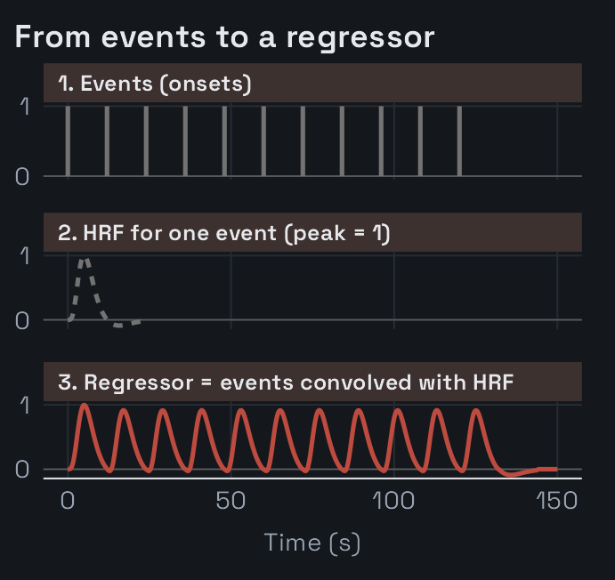
Evaluating and Plotting a Regressor
A regressor object stores the event information but
doesn’t automatically compute the timecourse. To get the predicted BOLD
signal at specific time points (e.g., corresponding to scan acquisition
times), we use the evaluate() function.
# Define a time grid corresponding to scan times (e.g., TR=2s)
TR <- 2
scan_times <- seq(0, 140, by = TR)
# One value per scan
head(evaluate(reg1, scan_times))
#> [1] 4.650473e-06 3.679907e-02 1.556004e-01 1.601994e-01 9.016183e-02
#> [6] 3.213275e-02plot_regressors() draws the continuous prediction on a
fine grid and, with samples, the values the model actually
uses at each scan. Grey bars under the curve mark the events.
(plot(reg1) gives a quick base-graphics view of the same
regressor.)
plot_regressors(reg1, grid = seq(0, 140, by = 0.1), samples = scan_times,
labels = "SPMG1 regressor",
title = "Predicted response to 11 events",
subtitle = "Evaluated at every scan (TR = 2 s)")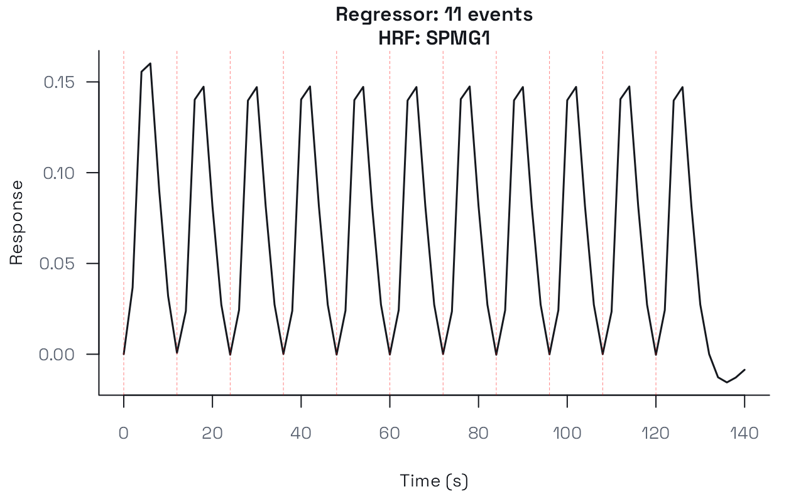
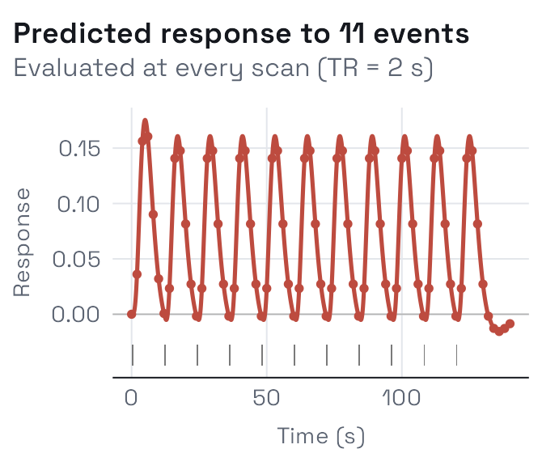
The curve is the modeled response; dots are its values at the scan times (TR = 2 s); grey bars mark event onsets.
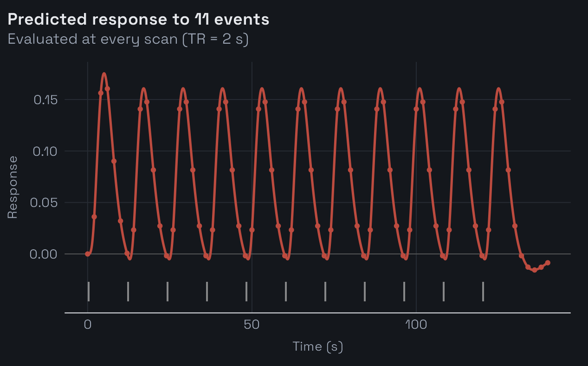
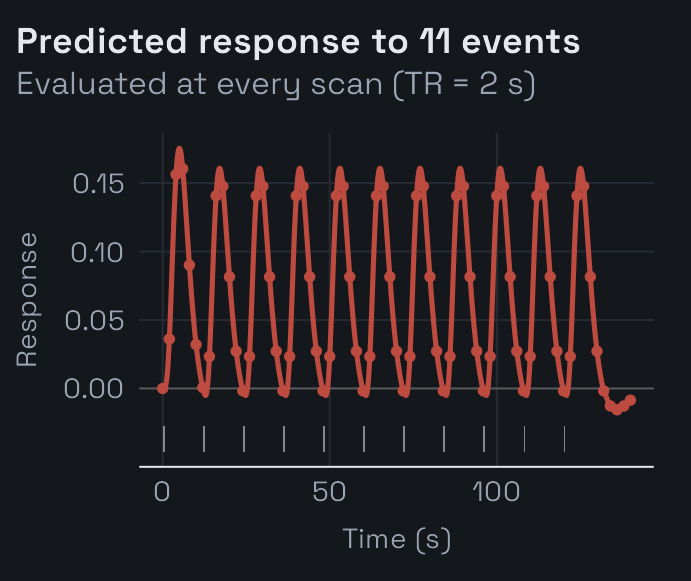
Varying Event Durations
Sometimes events have different durations. The duration
argument in regressor() can take a vector matching the
length of onsets.
# Example onsets and durations
onsets_var_dur <- seq(0, 5 * 12, length.out = 6)
durations_var <- 1:length(onsets_var_dur) # Durations increase from 1s to 6s
# Create regressor with varying durations
reg_var_dur <- regressor(onsets_var_dur, HRF_SPMG1, duration = durations_var)
scan_times_dur <- seq(0, max(onsets_var_dur) + 30, by = TR)
fine_grid_dur <- seq(0, max(scan_times_dur), by = 0.1)The width of each grey bar is the event’s duration. Longer events produce larger responses:
plot_regressors(reg_var_dur, grid = fine_grid_dur,
labels = "Durations 1-6 s",
title = "Increasing event durations")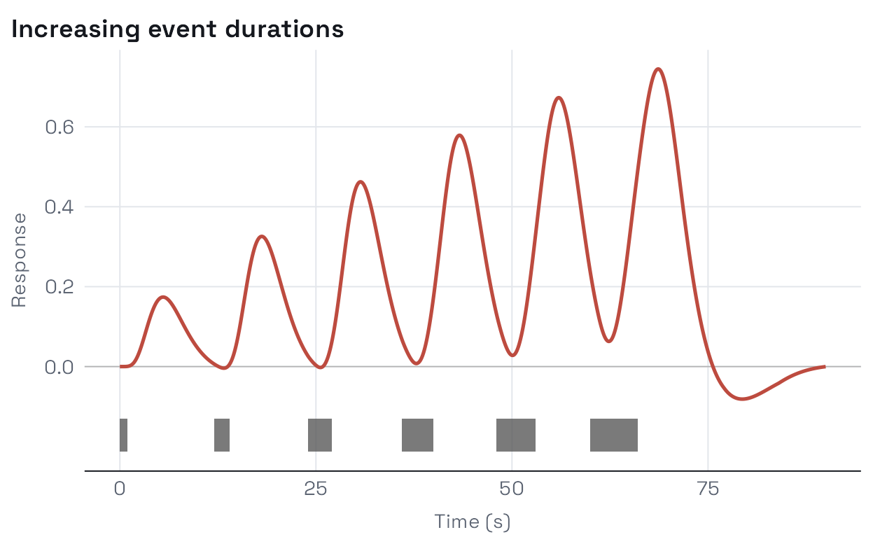
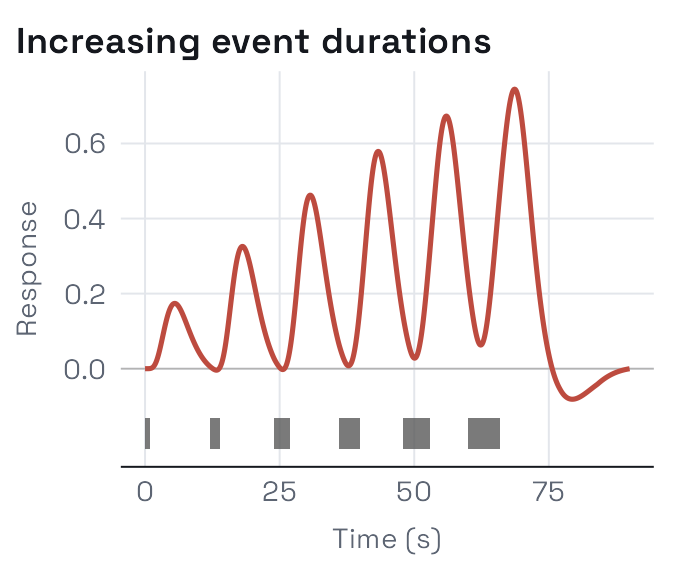
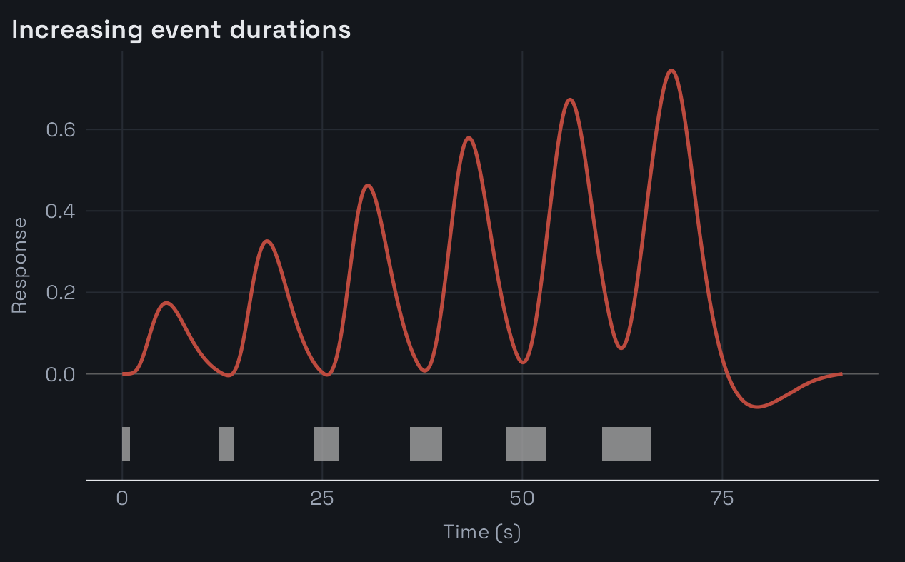
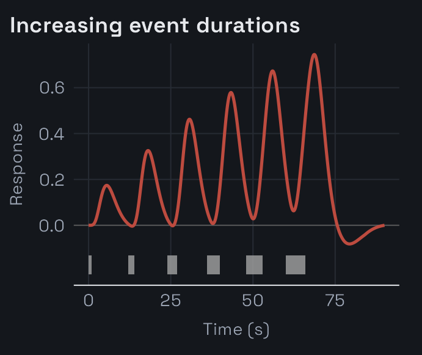
Duration and Summation
By default (summate=TRUE), the predicted response
accumulates if events overlap or have extended duration. Setting
summate=FALSE averages over each event’s duration instead,
so the peak amplitude no longer grows with duration.
# Create regressor with varying durations, summate=FALSE
reg_var_dur_nosum <- regressor(onsets_var_dur, HRF_SPMG1,
duration = durations_var, summate = FALSE)
# Compare summating vs non-summating using plot_regressors()
plot_regressors(reg_var_dur, reg_var_dur_nosum,
labels = c("summate = TRUE", "summate = FALSE"),
grid = fine_grid_dur,
title = "Summed vs. averaged responses",
subtitle = "Same six events, durations 1-6 s")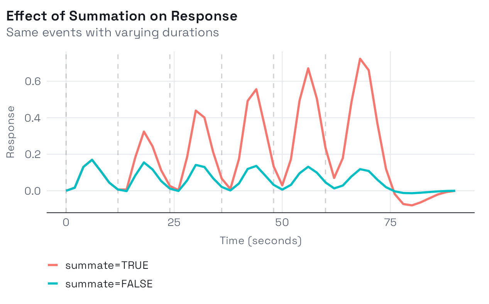
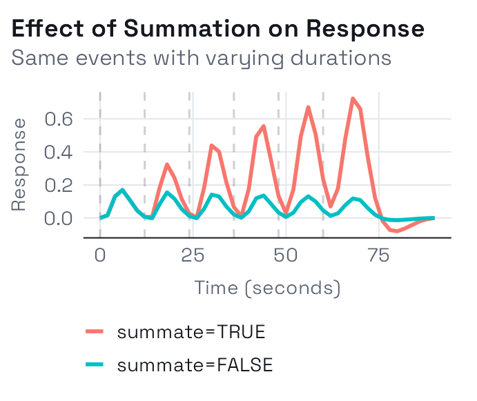
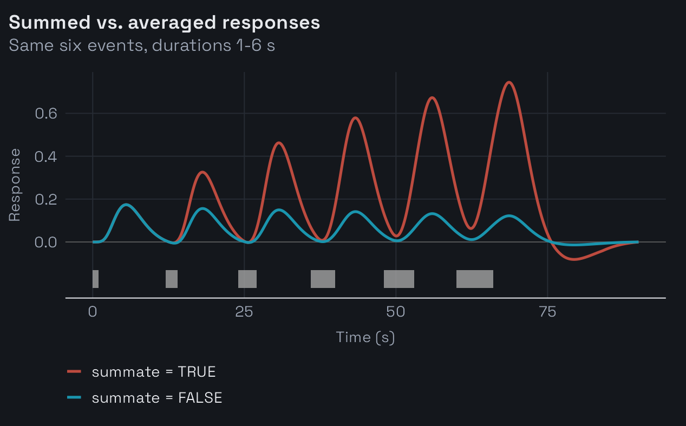
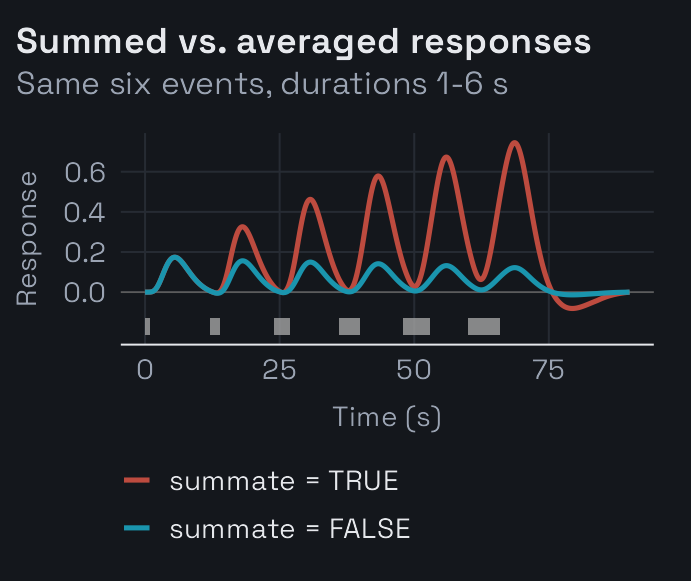
Varying Event Amplitudes (Parametric Modulation)
We can model variations in event intensity or some associated
parameter by providing an amplitude vector. This creates a
parametric regressor where the height of the HRF for each event
is scaled by the corresponding amplitude value.
# Example onsets and amplitudes (e.g., representing task difficulty)
onsets_amp <- seq(0, 10 * 12, length.out = 11)
amplitudes_raw <- 1:length(onsets_amp)
# It's common practice to center the modulator
amplitudes_scaled <- scale(amplitudes_raw, center = TRUE, scale = FALSE)
# Create the parametric regressor
reg_amp <- regressor(onsets_amp, HRF_SPMG1, amplitude = amplitudes_scaled)
# The centred amplitudes run from -5 to 5; the middle event has amplitude 0
drop(amplitudes_scaled)
#> [1] -5 -4 -3 -2 -1 0 1 2 3 4 5
#> attr(,"scaled:center")
#> [1] 6Each event now contributes an HRF scaled by its amplitude, so early
events (negative amplitudes) produce dips and late events peaks. The
event with amplitude 0 contributes nothing (regressor()
drops it):
fine_grid_amp <- seq(0, max(onsets_amp) + 30, by = 0.1)
plot_regressors(reg_amp, grid = fine_grid_amp,
labels = "Amplitude-modulated",
title = "Parametric modulation",
subtitle = "Mean-centred amplitudes from -5 to 5")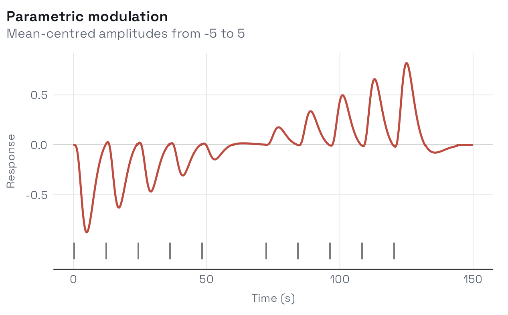
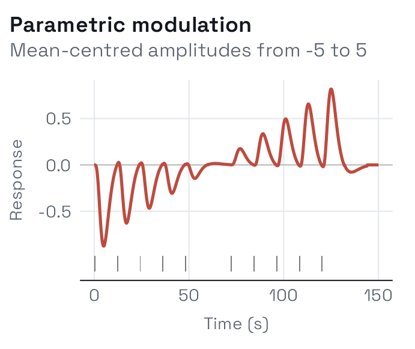
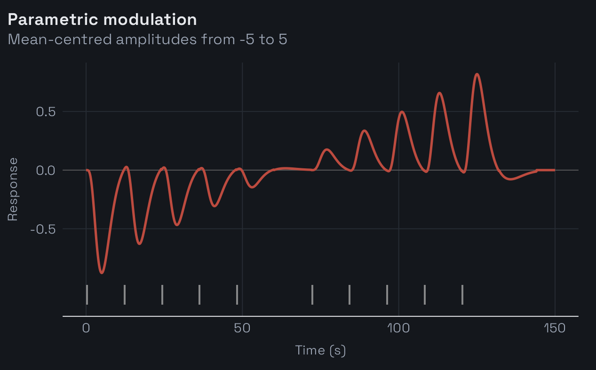
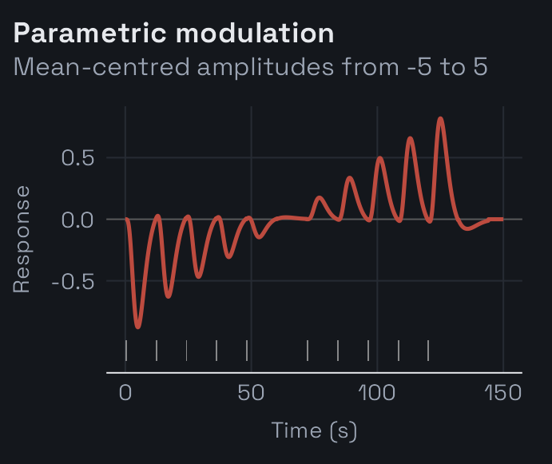
Continuous Features
A sampled feature such as RMS energy is a time series, not a list of
trials. feature_regressor() encodes each sample as a
zero-order-hold bin of width dt and convolves that signal
with the HRF. That is the same linear model as amplitude modulation on
this sampling grid: the predicted BOLD is
.
By default the series is demeaned before convolution
(center = TRUE) and left in native units. For a whole-run
series that is
.
In the interior of the run, overlapping HRFs make
nearly constant, so with a GLM intercept the centered and raw columns
test the same effect. They differ by the HRF-length ramp of
at the run boundaries; centering removes that onset/offset transient.
scale = "sd" z-scores the feature, not the final filtered
design column.
dt <- 0.1
feat_times <- seq(0, 20, by = dt)
# Simulated acoustic envelope
rms <- abs(sin(2 * pi * feat_times / 8)) * (0.5 + 0.5 * sin(2 * pi * feat_times / 20))
feat <- feature_regressor(rms, dt = dt, hrf = HRF_SPMG1)The top panel is the feature after centring, the input to the convolution; the bottom panel is the predicted BOLD response. The response lags the feature by several seconds and smooths it. Because the feature is centred, its quiet second half is below its mean, and the response dips well below zero around 20 s; that trough comes from centring, not from the HRF undershoot:
feat_grid <- seq(0, max(feat_times) + 30, by = 0.1)
feat_df <- rbind(
data.frame(time = feat_times, value = rms - mean(rms),
panel = "Feature (centred), input"),
data.frame(time = feat_grid, value = evaluate(feat, feat_grid, precision = dt),
panel = "Predicted BOLD, output")
)
feat_df$panel <- factor(feat_df$panel, levels = unique(feat_df$panel))
ggplot(feat_df, aes(time, value, colour = panel)) +
geom_hline(yintercept = 0, colour = "grey70", linewidth = 0.3) +
geom_line(linewidth = 0.9) +
facet_wrap(~panel, ncol = 1, scales = "free_y") +
scale_colour_manual(values = c("grey45", hrf_palette(1))) +
scale_y_continuous(breaks = function(l) {
b <- pretty(l, n = 3)
b[b >= l[1] & b <= l[2]]
}) +
labs(title = "Feature regressor", subtitle = "Input (centred feature) and output",
x = "Time (s)", y = NULL) +
theme(legend.position = "none", strip.text = element_text(hjust = 0),
plot.title.position = "plot")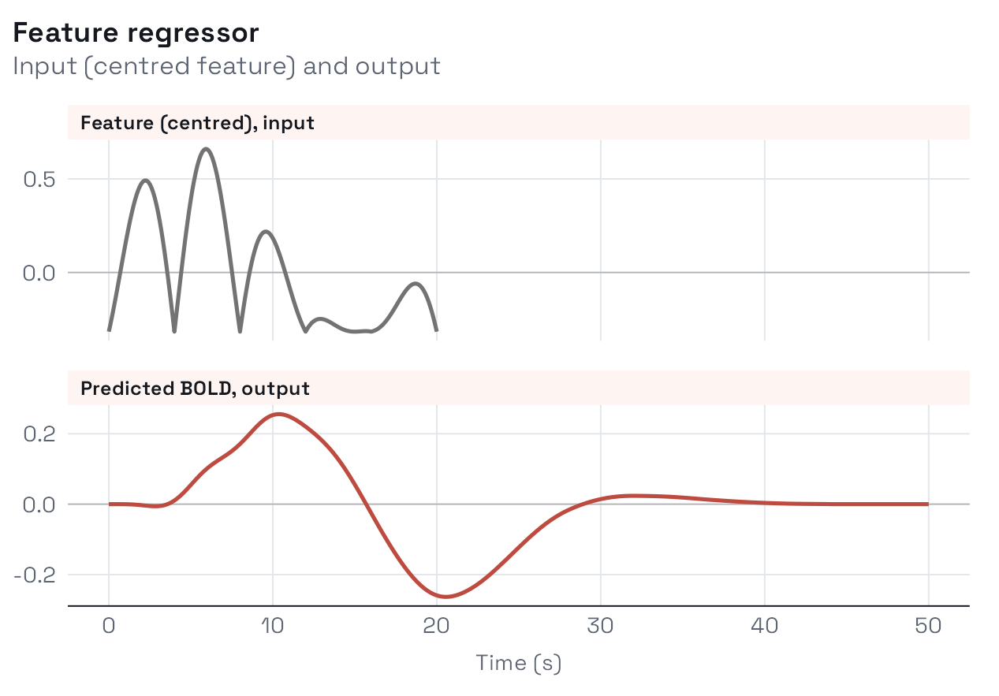
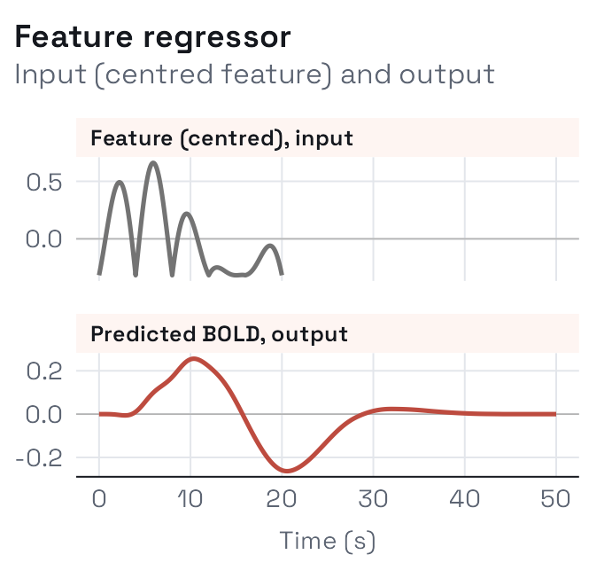
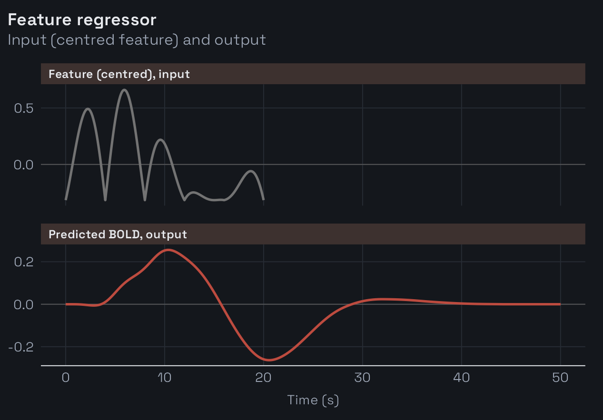
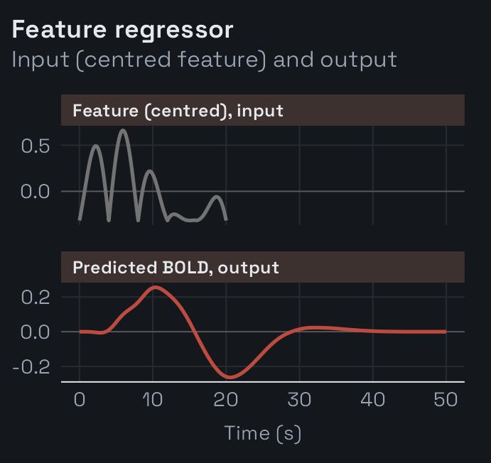
Using regressor(times, amplitude = rms, duration = 0)
instead would treat each sample as a unit-mass impulse and scale the
predicted BOLD by about 1/dt. Pass
duration = dt (and skip centering) if you need the same ZOH
encoding from regressor().
If you want intensity conditional on an on-period, pass a
mask for those samples (off-period stays 0 after centering)
and a separate boxcar for presence. That is not an affine transform of
the all-sample series. Do not drop off-period samples before centering:
that silently turns the all-sample model into the sparse one.
Combining Duration and Amplitude Modulation
You can provide both duration and amplitude
vectors to model events that vary in both aspects.
set.seed(123)
onsets_comb <- seq(0, 10 * 12, length.out = 11)
amps_comb <- scale(1:length(onsets_comb), center = TRUE, scale = FALSE)
durs_comb <- sample(1:5, length(onsets_comb), replace = TRUE)
reg_comb <- regressor(onsets_comb, HRF_SPMG1,
amplitude = amps_comb, duration = durs_comb)
fine_grid_comb <- seq(0, max(onsets_comb) + 30, by = 0.1)
plot_regressors(reg_comb, grid = fine_grid_comb,
labels = "Duration and amplitude",
title = "Duration and amplitude modulation",
subtitle = "Bar width = duration")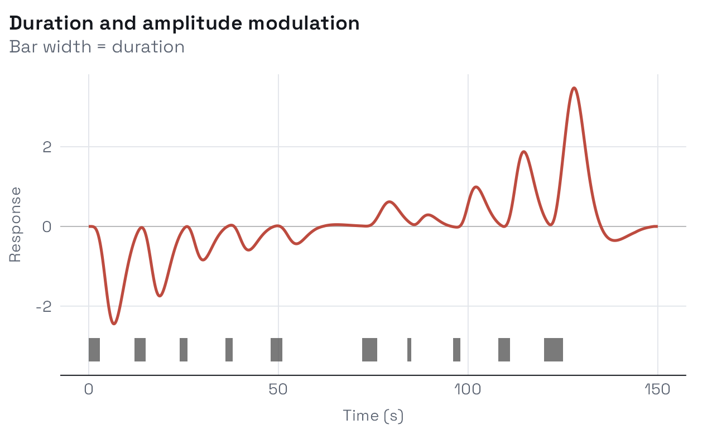
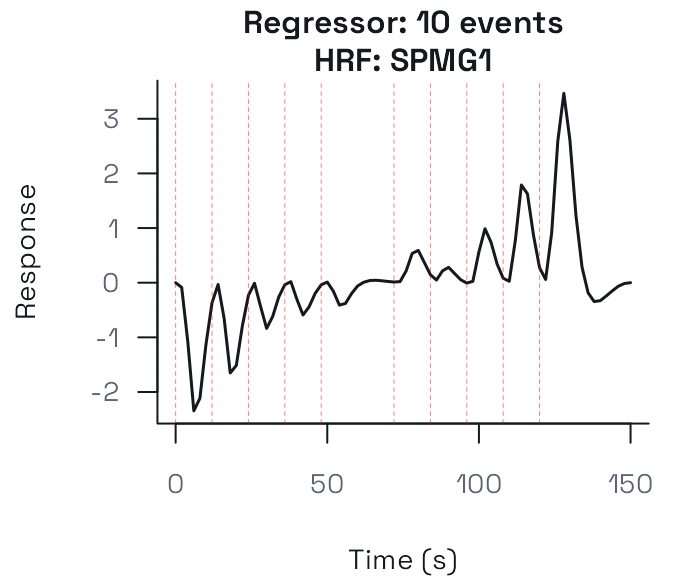
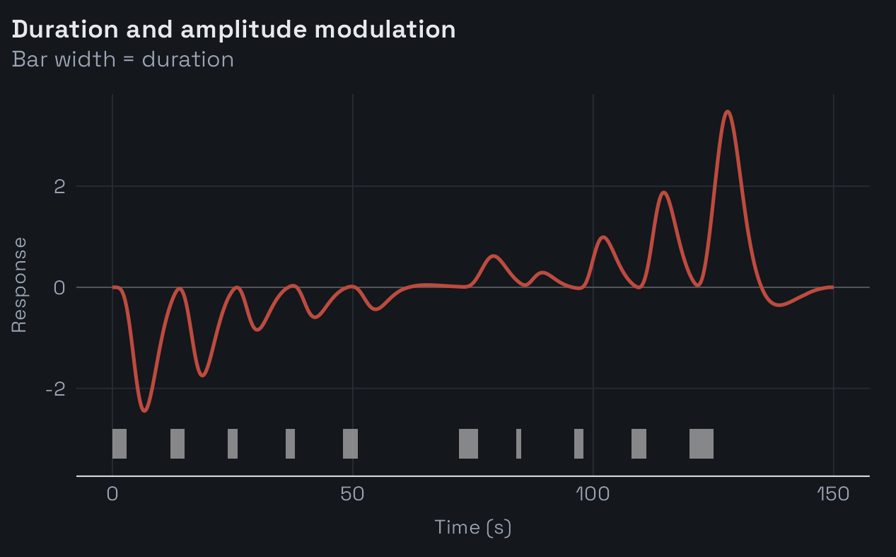
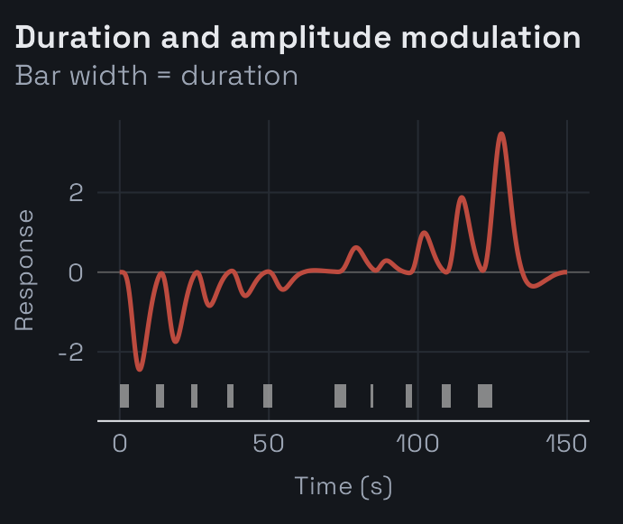
Regressors with HRF Basis Sets
If you use an HRF object with multiple basis functions (e.g.,
HRF_SPMG3, HRF_BSPLINE), the
regressor object will represent multiple timecourses, one
for each basis function. evaluate() will return a
matrix.
# Use a B-spline basis set
onsets_basis <- seq(0, 10 * 12, length.out = 11)
hrf_basis <- HRF_BSPLINE # Uses N=5 basis functions by default
reg_basis <- regressor(onsets_basis, hrf_basis)
nbasis(reg_basis) # Should be 5
#> [1] 5
# Evaluate - this returns a matrix
scan_times_basis <- seq(0, max(onsets_basis) + 30, by = TR)
pred_basis_matrix <- evaluate(reg_basis, scan_times_basis)
dim(pred_basis_matrix) # rows = time points, cols = basis functions
#> [1] 76 5Each column is the event train convolved with one basis function, so
the design matrix gains one column per basis function. With
layout = "stack", each column gets its own panel. Here we
show the first five events (0–58 s): early basis functions (B1) respond
right after each event, later ones progressively later. Every basis
function returns to zero at the end of its 24-second span, so each
column is a continuous sum of shifted copies (with a corner where each
copy starts or ends).
plot_regressors(reg_basis, grid = seq(0, 58, by = 0.1), layout = "stack",
title = "One column per basis function",
subtitle = "B-spline basis (N = 5), events every 12 s")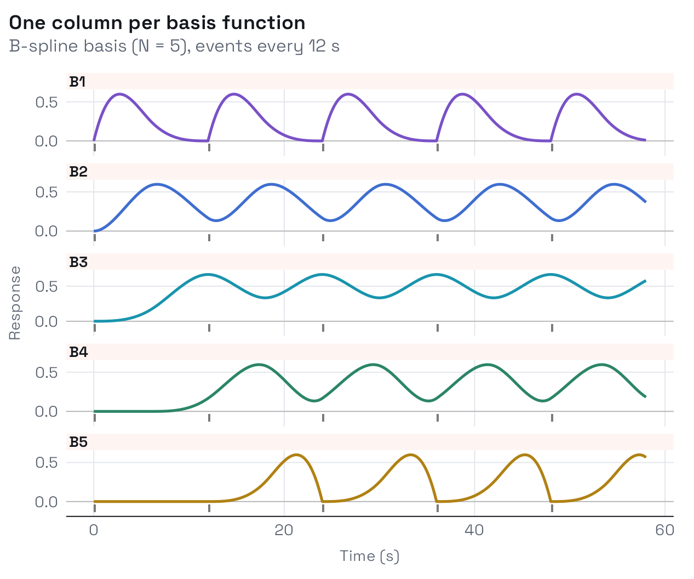
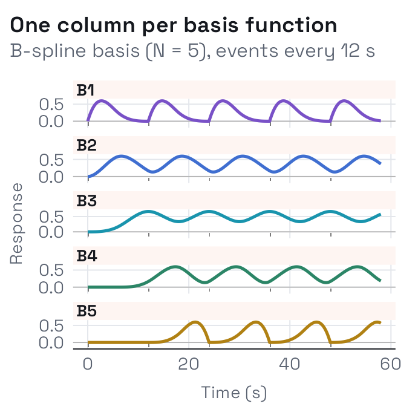
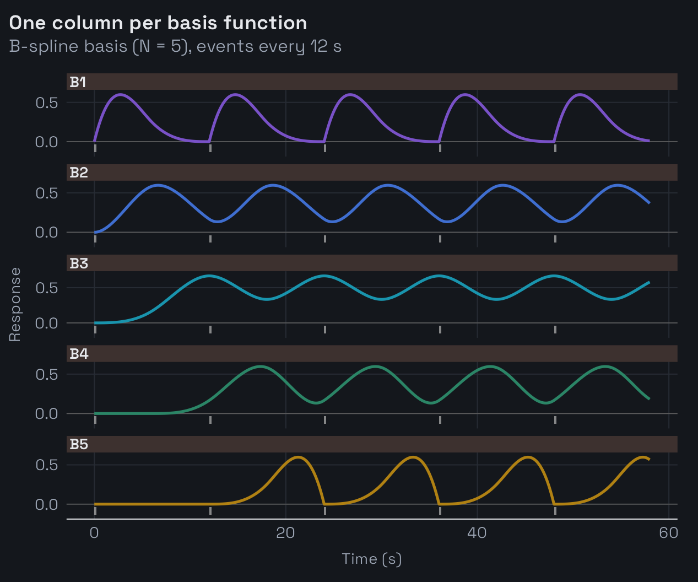
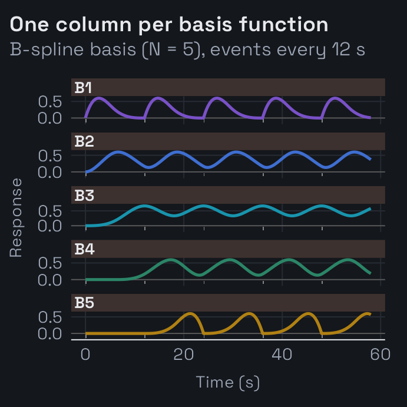
Shifting Regressors
You can temporally shift all onsets within a regressor using the
shift() method.
# Original regressor
reg_orig <- regressor(onsets = c(10, 30, 50), hrf = HRF_SPMG1)
# Shifted regressor (delay by 5 seconds)
reg_shifted <- shift(reg_orig, shift_amount = 5)
onsets(reg_orig)
#> [1] 10 30 50
onsets(reg_shifted) # Onsets are now 15, 35, 55
#> [1] 15 35 55The bars mark each regressor’s onsets in its own colour; the whole response moves 5 seconds later without changing shape:
plot_regressors(reg_orig, reg_shifted,
labels = c("Original", "Shifted +5 s"),
grid = seq(0, 80, by = 0.1),
show_onsets = TRUE, # Show onsets for both
title = "Shifting a regressor")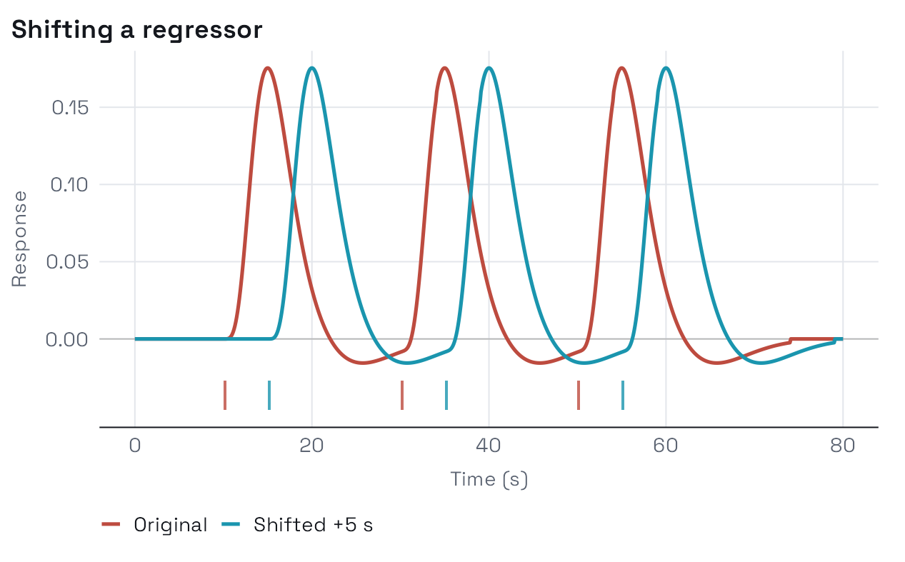
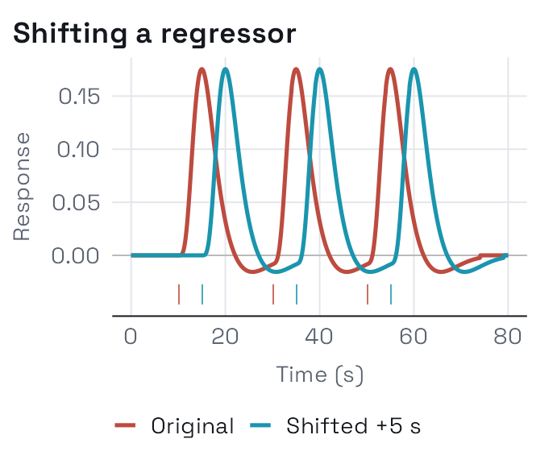
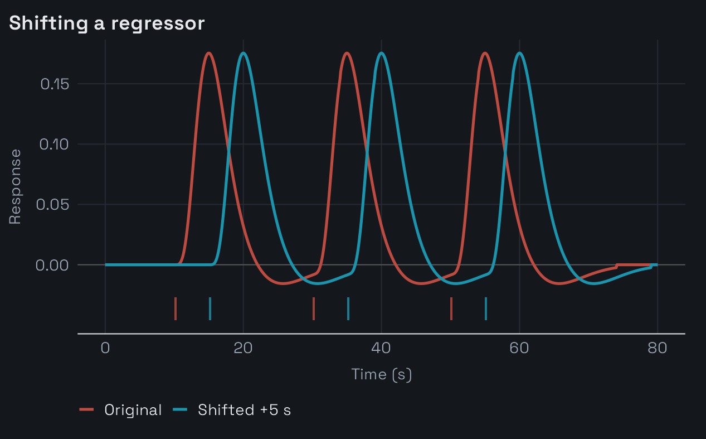
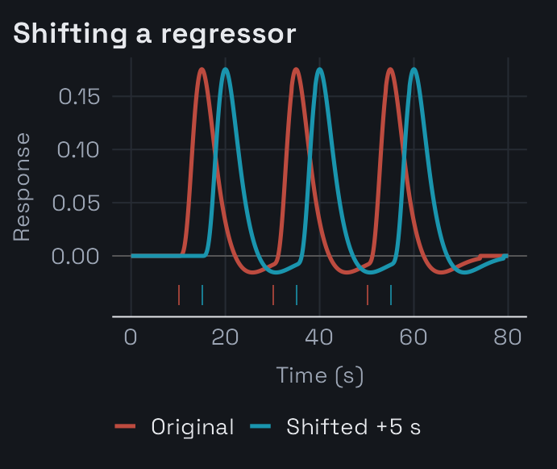